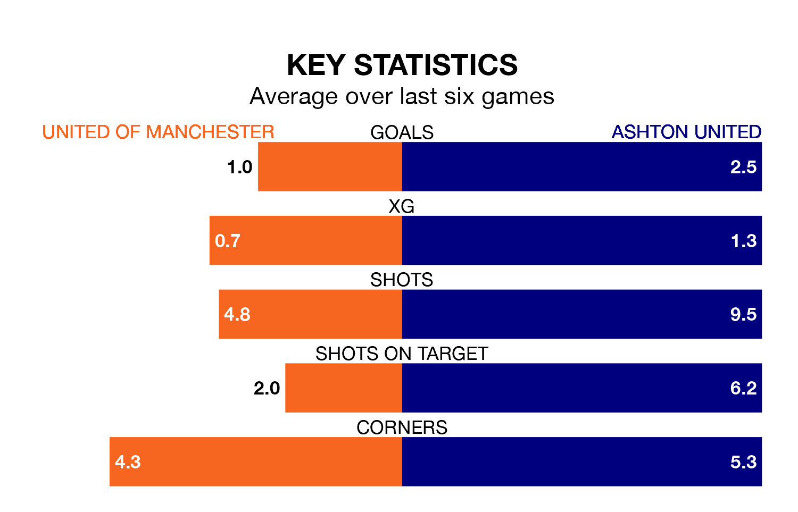

Ashton United visit United of Manchester at Broadhurst Park on Monday on the back of four consecutive wins in the Northern Premier League.
Ashton have picked up 14 points from their last six games, and they face a F.C. United side who lost their last match, and have collected six points from the last possible 18.
With 48 goals in 34 games so far this season, United of Manchester are scoring at below the league average rate with 1.4 goals per game. And they are conceding more than average, letting in 66 goals at a rate of 1.9 per game.
Ashton, meanwhile, are above average scorers, with 1.8 goals per game, compared to a league average of 1.6. They have conceded 1.5 goals per game.
In the last 10 years, United of Manchester and Ashton have played each other on 12 occasions. United of Manchester won nine of them and Ashton three.
On average, F.C. United scored 2.7 goals and Ashton 1.2 in those matches.
Their last meeting was on December 26, when United of Manchester won 2-1 away.
United are seventh in the table after 34 games, of which they have won 16 and drawn 10, earning 58 points.
F.C. United are eight places behind the visitors in 15th, with 13 wins and four draws putting them on 43 points.
United of Manchester's last match was on Saturday, a 3-1 loss against Macclesfield.
Ashton beat Whitby Town 4-1 last time out, on Friday.
Updated: 10:31 (UTC), 31/03/24